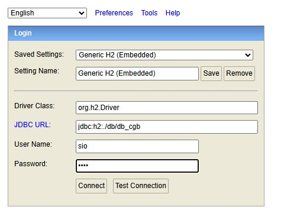
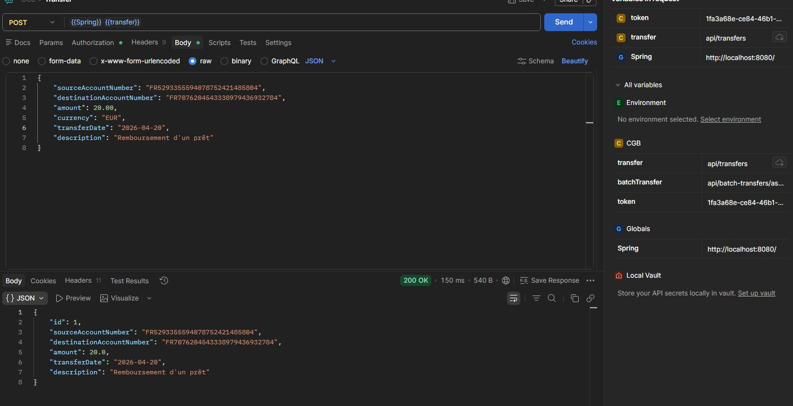
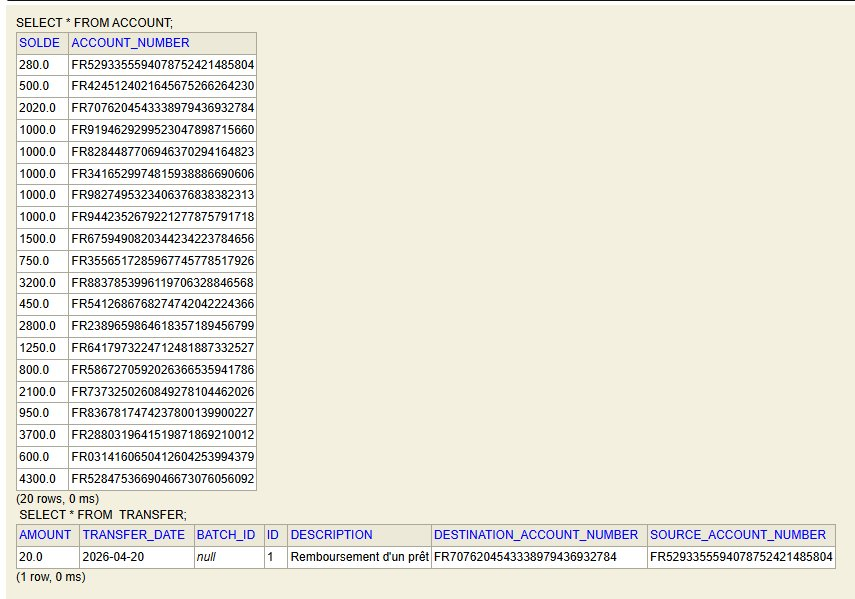
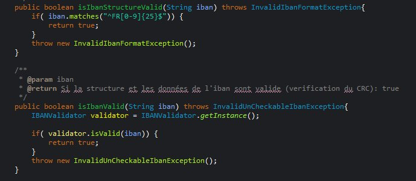
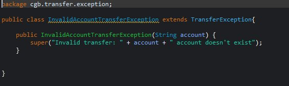
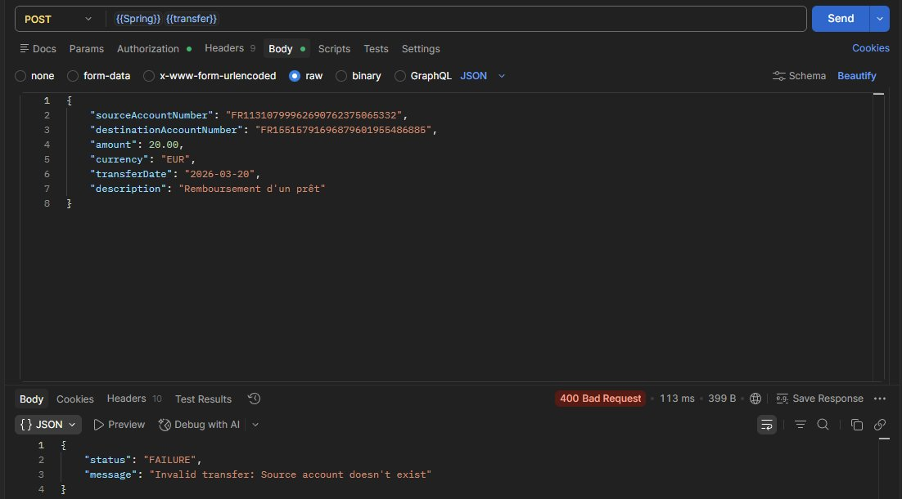

Java · Spring Boot · H2 · JPA · Maven · REST API · JUnit · MockMvc
API REST de virements bancaires développée en Java Spring Boot pour le client GSB. Reprise et amélioration d'une base existante : conformité IBAN, correctifs fonctionnels, traitement par lot asynchrone et préparation de la sécurisation OAuth2/JWT.
Crédit Général Bank est une banque française orientée services financiers et solutions numériques pour entreprises. Le projet porte sur une API REST de virements destinée notamment au client GSB, qui cherche à automatiser le paiement des frais de ses visiteurs médicaux via des virements bancaires.
L'application existante permet déjà les virements unitaires, mais elle reste en phase de test : elle utilise une base H2 embarquée, une authentification basique temporaire, et ne respecte pas encore toutes les bonnes pratiques Spring ni les exigences bancaires (conformité IBAN, contrôles métier, gestion des erreurs). Notre travail consiste à la faire évoluer étape par étape.
Première étape : cloner le dépôt, configurer l'environnement Java/Maven/Spring Boot et étudier le code existant. L'objectif était de comprendre les endpoints disponibles, d'effectuer un premier virement de test et de documenter les anomalies observées.
L'application utilise une base H2 embarquée, accessible via la console web de Spring.
La configuration JDBC (jdbc:h2:~/db/db_cgb) permet de vérifier directement l'état des tables
ACCOUNT et TRANSFER après chaque opération.

Console H2 — connexion avec le driver org.h2.Driver et l'URL jdbc:h2:~/db/db_cgb
Un virement unitaire est effectué via un POST /api/transfers avec un corps JSON contenant
le compte source, le compte destinataire, le montant, la devise, la date et une description.
L'API répond en 200 OK et retourne la transaction créée.

Postman — POST /api/transfers : réponse 200 OK avec la transaction créée (id, comptes, montant, date, description)
La vérification en base confirme la bonne persistance : la table TRANSFER enregistre la ligne
avec l'ensemble des champs, et la table ACCOUNT reflète le nouveau solde du compte source
après débit. Les 20 comptes initialisés avec des IBAN valides sont également visibles.

Console H2 — SELECT * FROM ACCOUNT (20 comptes avec IBAN valides) et SELECT * FROM TRANSFER (virement persisté)
L'une des premières exigences bancaires est de s'assurer que tous les IBAN manipulés par l'API sont
structurellement et cryptographiquement valides. J'ai créé une classe utilitaire singleton
IBANValidator qui expose deux méthodes de validation.
La méthode isIbanStructureValid vérifie qu'un IBAN français respecte le format attendu
(préfixe FR suivi de 25 chiffres) grâce à une expression régulière.
La méthode isIbanValid va plus loin en déléguant au validateur Apache Commons (IBANValidator.getInstance())
qui effectue le calcul CRC modulo 97 défini par la norme ISO 13616.
Si l'IBAN ne passe pas ces contrôles, des exceptions dédiées sont levées.

Classe IBANValidator — validation structurelle par regex et validation CRC via IBANValidator.getInstance()
L'API de base ne vérifiait pas les cas d'erreur les plus fondamentaux. Cette mission a consisté à ajouter les contrôles métier manquants et à mettre en place une hiérarchie d'exceptions propre avec des réponses HTTP cohérentes.
Les contrôles ajoutés couvrent notamment : l'existence des comptes source et destinataire, le refus des montants négatifs ou nuls, la vérification du solde disponible, le refus des dates antérieures à aujourd'hui et la génération automatique de la date du jour si absente.
Chaque cas d'erreur est représenté par une exception métier dédiée.
Par exemple, InvalidAccountTransferException étend TransferException
et produit un message explicite indiquant lequel des comptes est introuvable.
Ces exceptions sont interceptées par un @ControllerAdvice qui formate la réponse en JSON
avec un statut HTTP adapté.

Classe InvalidAccountTransferException — message d'erreur construit dynamiquement selon le compte manquant

Postman — réponse 400 Bad Request avec status: FAILURE et message explicite quand le compte source est introuvable
La capture Postman montre un appel avec un IBAN source inexistant en base.
L'API retourne un 400 Bad Request avec un corps JSON structuré
(status: "FAILURE", message: "Invalid transfer: Source account doesn't exist")
plutôt qu'une erreur Spring générique — ce qui facilite le traitement côté client GSB.
Endpoint POST /api/batch-transfers recevant un lot de virements JSON,
traitement asynchrone de chaque virement dans une transaction indépendante,
réponse immédiate avec l'état de réception du lot.
Génération d'un rapport JSON de lot (statut par virement), envoi d'un e-mail de fin de traitement avec les statistiques succès/échecs, consultation des virements en erreur.
Endpoint générant un nouveau lot à partir des virements échoués, préfixé REJEU.
Un virement déjà en succès ne peut pas être rejoué.
Authentification forte par token JWT, gestion des rôles COMPTABLE / UTILISATEUR, restriction des endpoints selon le profil, remplacement de la Basic Auth temporaire.